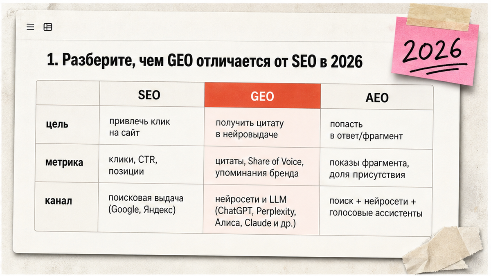
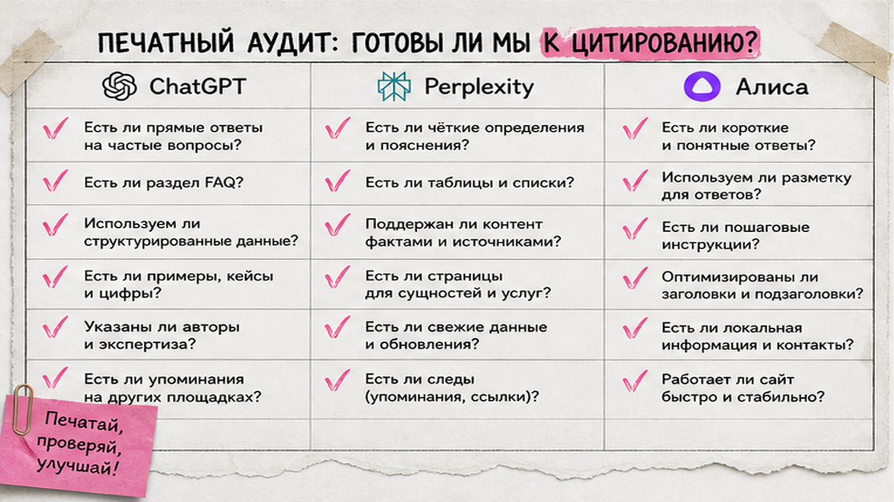
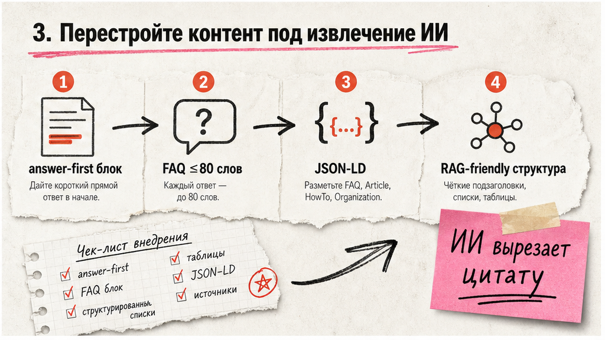

Вы вкладываетесь в SEO, а ChatGPT и Алиса отвечают на запросы клиентов без перехода на ваш сайт? GEO (Generative Engine Optimization) – настройка страниц так, чтобы нейросети цитировали вас как источник. За 60–90 минут вы проверите robots.txt, добавите блоки "ответ сразу" и FAQ, внедрите Schema.org и составите таблицу мониторинга. Ниже – чек-лист geo оптимизации сайта с приоритетами: сначала критичное, потом важное и бонус.
TL;DR / Быстрый инсайт: GEO – оптимизация под генеративный поиск: ChatGPT, Perplexity, Яндекс с Алисой. SEO даёт клик; GEO – цитату в ответе ИИ. Минимум: robots.txt для AI-ботов, прямой ответ в первых абзацах, FAQ до 80 слов, JSON-LD FAQPage и Article, аудит 20–30 промптов. Princeton GEO-bench: цитаты и цифры дают +30–40% visibility. SEO остаётся базой: 74% брендов из топ-10 Google есть в ChatGPT.
Запрос "geo оптимизация" – около 981 показа/мес в Wordstat, "geo оптимизация сайта" – 248. Люди ищут чек-лист: с чего начать geo оптимизацию. Это не локальная geo-SEO про карты – речь о Generative Engine Optimization.
Нейропоиск работает иначе классической выдачи. RAG (Retrieval-Augmented Generation) – ИИ сначала находит куски текста на сайтах, потом собирает ответ со ссылками. Представьте библиотекаря с карточками: он цитирует найденное, а не выдумывает из головы. Яндекс Нейро отбирает 5 источников из топ-30 органики; YandexGPT опирается на текст страницы, а не на "память" модели. С мая 2025 в поиске Яндекса Алиса заменила вертикаль "Нейро" – тексты генерирует YandexGPT 5 Pro. Значит, geo seo оптимизация начинается с доступа AI-краулеров и структуры, которую легко вырезать в цитату.

SEO – позиция и клик в Google/Яндексе. GEO – цитирование в AI Overviews, Perplexity, ChatGPT, Алисе. AEO – короткий прямой ответ в начале страницы для блока "ответ".
| Критерий | SEO | GEO | AEO |
|---|---|---|---|
| Цель | Клик из выдачи | Цитата в ответе ИИ | Готовый фрагмент |
| Метрика | Позиция, CTR | Share of Voice | Answer block |
| Контент | Ключи + глубина | Answer-first, FAQ | 40–80 слов |
| Техника | Sitemap, CWV | robots.txt, HTML | FAQPage Schema |
| Срок | Недели–месяцы | 3–6 недель | Быстрее на FAQ |
Итоговый вердикт: GEO не заменяет SEO – 74% брендов из топ-10 Google есть в ChatGPT (Seer Interactive). Делайте: усиливайте money-pages структурой для цитирования. Не делайте: бросать классическую оптимизацию.

Без baseline не поймёте, сработали ли правки. Соберите 20–30 промптов: брендовые, коммерческие, информационные. Прогоните в ChatGPT, Perplexity и Алисе. Зафиксируйте: есть ли ваш URL, упоминается ли бренд.
Схема аудита:
Промпты → ChatGPT + Perplexity + Алиса → таблица "цитата да/нет" → robots.txt → view-source URL
Около 35% русскоязычных сайтов блокируют GPTBot – конкуренты сами закрывают себе дверь. Делайте: сохраните baseline в Google Sheets до любых правок. Не делайте: судить по одному промпту – нужна выборка минимум 20 запросов.
Пример robots.txt (Allow для AI-ботов, Disallow только на служебные разделы):
User-agent: GPTBot
Allow: /
User-agent: PerplexityBot
Allow: /
User-agent: Google-Extended
Allow: /
Disallow: /admin/

44,2% цитат LLM – в первых 30% текста (Grows Memo, 2026). Формат "вопрос → ответ до 80 слов" цитируется чаще всего. Keyword stuffing в GEO хуже baseline на ~10% (Princeton).
Answer-first после H1/H2, TL;DR в начале longread, FAQ 5–7 с ответами до 80 слов, таблицы с цифрами (+30–40% visibility по Princeton). 68,7% цитируемых страниц – с чёткими H2–H4. Перелинковка hub → spoke; образец – пример SEO-статьи (B01).
Делайте: обновите 3–5 URL за неделю. Не делайте: прятать ответ за paywall – ИИ не процитирует.
Schema.org – словарь подсказок для поисковиков и ИИ: кто вы, что за статья, какие вопросы на странице. FAQPage, Article и Organization снижают риск "галлюцинаций" о бренде. JSON-LD – формат разметки; проверяйте в Google Rich Results Test.
Минимальный набор для geo оптимизации контента: Organization + WebSite на главной (logo, sameAs), Article на блоге (author, datePublished, dateModified), FAQPage там, где FAQ виден пользователю, HowTo – бонус для инструкций. Google-Extended блокируется только через product token – не путайте с Googlebot. llms.txt опционален и не заменяет robots.txt (Habr, 2026). Sitemap.xml с блогом, FAQ и услугами. Title до 60 символов, description до 160 с вопросом пользователя. Даты на видимом месте. TTFB (время первого байта) – до 2–3 с, чтобы AI-fetch не отвалился.
Делайте: обновляйте dateModified. Не делайте: FAQ в schema без HTML на странице.
Сначала "Критично", затем "Важно", потом "Бонус".
Критично
Важно
Бонус
Делайте: дедлайн 2 недели на "Критично". Не делайте: все 32 пункта за день.
SoV – доля промптов с цитатой вашего сайта. Первые сдвиги – 3–6 недель; устойчивая картина – 2–3 месяца замеров каждые 2–4 недели.
| Промпт | ChatGPT | Perplexity | Алиса | URL | Дата |
|---|---|---|---|---|---|
| сколько стоит [услуга] | нет | да | нет | /pricing | 2026-06-11 |
| [бренд] vs [конкурент] | да | да | да | /compare | 2026-06-11 |
| как настроить [продукт] | нет | нет | нет | – | 2026-06-11 |
Когда SoV растёт на одном URL – скопируйте структуру (answer-first + FAQ + таблица) на остальные money-pages. По оценке индустрии, 60–80% пользователей получают ответ в интерфейсе чат-бота без перехода на сайт – значит, цитата важнее клика. FAQ и мониторинг промптов частично автоматизируют: сценарии на n8n – в гайде автоматизация n8n с ИИ-агентами, подключение источников к Cursor – в подключение MCP в Cursor. Для контент-конвейера с GEO-структурой автоматизируйте сбор FAQ, черновики статей и напоминания о re-measure через n8n или Make.
Делайте: журнал "правка → SoV". Не делайте: менять всё сразу.
GEO – это SEO плюс структура для цитирования. Начните с robots.txt и одной money-page с FAQ – через месяц увидите, растёт ли доля упоминаний в нейроответах. Вопросы по автоматизации мониторинга – в Telegram @maya_pro.
Материал проверен: эксперт Елена Ковалева (Главный эксперт по SEO/GEO).
Достоверность данных: все статистические показатели и ключевые фразы верифицированы по данным Яндекс Wordstat на июнь 2026 года.
Откройте robots.txt и убедитесь, что AI-боты не заблокированы. Составьте 10 тестовых промптов и прогоните в ChatGPT, Perplexity и Алисе. Добавьте FAQ 5–7 на money-page с ответами до 80 слов и разметкой FAQPage. Это минимум за одну рабочую сессию 60–90 минут.
SEO гонится за позицией и кликом в классической выдаче. GEO – за цитированием в синтезированном ответе нейросети. SEO остаётся фундаментом: без топ-30 органики сложнее попасть в 5 источников Яндекс Нейро. GEO добавляет answer-first, FAQ и Schema.
Да: FAQPage, Article, Organization – минимум 2026. Проверяйте JSON-LD в Rich Results Test.
Топ-30 органики, answer-first в начале, FAQ, HTML без JS. Яндекс берёт 5 источников; YandexGPT цитирует текст страницы.
Нет. Сначала robots.txt, HTML и Schema. llms.txt – опциональная подсказка для LLM-краулеров.
3–6 недель на первые сдвиги после robots/Schema/FAQ; устойчивый SoV – 2–3 месяца замеров.
Нет. Позиции в Google коррелируют с упоминаниями в ChatGPT. Оптимизируйте оба канала.